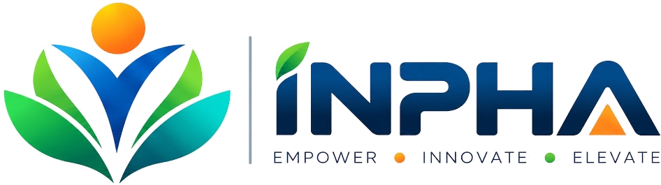

UX direction, wireframes and high-fidelity UI for inpha.in — presented for approval before any development begins.
School Policy Development · Teacher Training · School Campus & Environment Setup · Summer Camp · Winter Camp · Specialized Workshops & Awareness Sessions
App Development · Web Development · Video Editing · Graphic Design · Logo Design · Social Media Template Design & Campaign Management [wording to confirm]
Delivery is on-ground and online. Facilities: end-to-end consultation, follow-up support, and one team instead of multiple vendors. Every statement here comes from the brief.
"Can I rely on this partner?" Needs: policy, teacher training, campus setup, process, verified past work.
"Is it safe and good for my child?" Needs: camps and workshops, ages, safety and supervision, real photos, easy contact.
"Can one team handle my brand?" Needs: app, web, creative, social media; portfolio proof; a project enquiry.
Because most parents and schools use phones, mobile is designed first, with WhatsApp always one tap away.
The interface now follows the approved INPHA logo palette. Blue creates trust and depth, green supports learning and growth, and orange is reserved for action and highlights.
Editorial section tags, clean rule lines, subtle texture, and a structured component system help the site feel custom rather than template-based.
Generic gradient templates, decorative blobs, repetitive card grids, fake dashboards, and off-brand colour systems.
Fraunces — headings
Inter — body and UI
हिंदी शीर्षक — Noto Serif
हिंदी पाठ — Noto Sans Devanagari, line height 1.7
Staggered 450–750ms reveals: Tag → Headline → Value Copy → Action CTAs → Ambient Badges. Natural cubic-bezier curve.
150–250ms button lifts with layered drop shadows, smooth arrow gliding, tab transitions, and accessible accordion FAQ expansion.
Instant static mode for Figma / PDF capture. Full prefers-reduced-motion compliance disables transitions automatically.
Motion elevates perceived quality without delaying user task completion or interfering with page readability.
Default ↔ Hover (lift + glow) ↔ Pressed (scale .98). Live radar pulse loop via 1000ms After-delay Smart Animate.
Summer ↔ Winter ↔ Workshops sliding pill with 300ms Ease In Out. Collapsed ↔ Expanded FAQ with 350ms Gentle Spring.
Dedicated figma-components.html board with all variant sets side-by-side for 1-click import via html.to.design.
Agency designers can immediately combine frames as component variants in Figma and wire interactive prototypes.
A. Schools
B. Parents
C. Businesses
The hero introduces children and business under one idea. Two entry doors split the visitor at once, and the School door is larger, because it is the main service line.
Then: all services, School Care feature, reasons to choose INPHA, featured work, testimonials, blog and enquiry options. Numbers and testimonials are placeholders until verified.
A chaptered long-form page with a side index: Policy → Training → Campus → How we work → Tech support → Results → FAQ → Enquiry.
The school enquiry form asks only what the brief specifies: school name, city, number of students, contact details.
The hero is calmer (sky) and the safety strip sits right below it. Programs are tabbed (Summer, Winter, Workshops). The nine workshop topics are a scannable index.
Age groups, safety details and photos are clearly marked placeholders.
Same system, graphite tones, more grid. Three ways in (App & Web, Creative Studio, Social Media), the "one team" benefit, the five-step process and featured projects.
Projects use one case structure: need, work, result, never invented.
Mobile 390 · Tablet 820 · Desktop 1440. Same order everywhere.
Call · WhatsApp · Enquire bar on phones. 44px+ touch targets. Hindi: no fixed heights, line-height 1.6+, longer labels tested.
Buttons (3), chips, index tag, header + Services menu, footer, ruled column, case card, image frame, steps, FAQ, tabs, forms with states, gallery.
CSS custom properties, container queries, native <details> for FAQs, SVG route line, Google Fonts. No heavy effects.
The review board is itself working HTML/CSS, which shows the layouts are real, not a mockup. It is not the production site.
Final logo · confirmed service wording (social media) · real photos and videos · numbers · testimonials · team photos and bios · portfolio samples · camp age groups and safety details · contact details · legal text.
Approve the direction, palette and type · confirm the menu structure · confirm EN + HI scope for build.